Occupancy Type Editor
The Occupancy Type Editor provides a graphical way of viewing data, allows for the editing of the occupancy types, as well as providing the ability to create new ones.
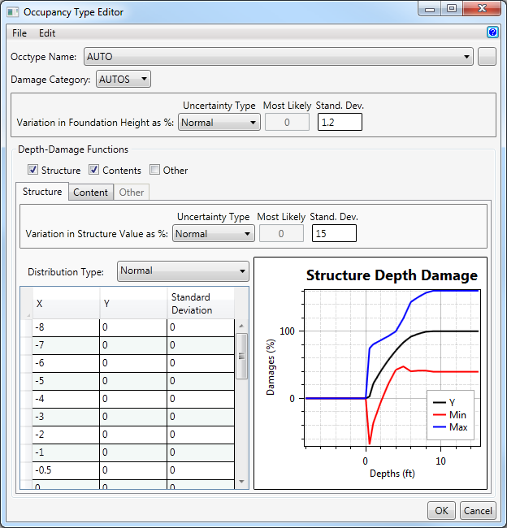
Occupancy Type Editor Help Sections:
Menu Bar
The Occupancy Type Editor menu bar includes the File menu, and the Edit menu.
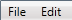
The File menu contains the Close option. Selecting Close will close the editor.
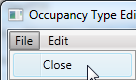
The Edit menu contains the Add New, Delete, Rename, and Save As options.
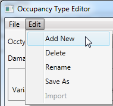
- Selecting Add New displays the New Name Dialog. Enter the new occupancy type name and enter the associated damage category.
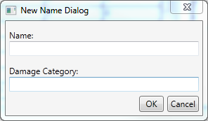
- Selecting Delete deletes the occupancy type that is displaying in the Occtype Name dropdown box.
- Selecting Rename gives the opportunity to change the name of the occupancy type that is displaying in the Occtype Name dropdown box. The Rename Occupancy Type dialog appears. Simply enter the new name for the occupancy type and hit the OK button.
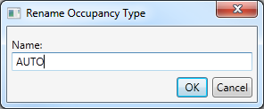
- Selecting Save As displays the Save Occupancy Type As dialog which creates a copy of the current occupancy type and gives it a new name.
Selecting/Adding Occupancy Types
The upper portion of the Occupancy Type Editor contains a dropdown list of all of the occupancy types. Change which damage category the occupancy type is associated with by changing the selection in the Damage Category dropdown box. Add a new occupancy type by clicking the button to the right of the Occtype Name and enter the Name and Damage Category of the new occupancy type.
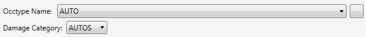
Editing the Foundation Height
Edit the variation in foundation height by first selecting the Uncertainty Type. The Uncertainty Type contains four options: None, Triangular, Normal, and Uniform. Different inputs become available depending on the option that you select.
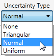
- If None is selected, no other selections are available.
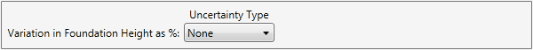
- If Triangular is selected, the Minimum and the Maximum values must be entered. The Minimum value cannot be greater than zero, and the Maximum value cannot be less than zero.
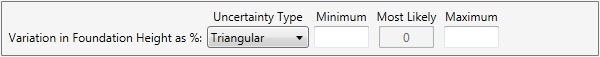
- If Normal is selected, the Standard Deviation option becomes available. The Standard Deviation cannot be greater than 15.
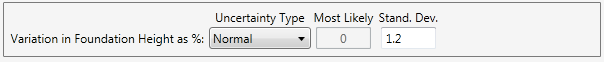
- If Uniform is selected, the Minimum and the Maximum values must be entered. The Minimum value cannot be greater than zero, and the Maximum value cannot be less than zero.
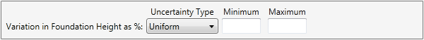
Variation in Structure Value
In this section of the Occupancy Type Editor changes are made to the variation in structure value as a percentage. Enable or disable the Structure, Contents, and Other tabs by checking or unchecking the associated check boxes. Similarly to the section above (Editing the Foundation Height), select the Uncertainty Type and enter the associated fields.
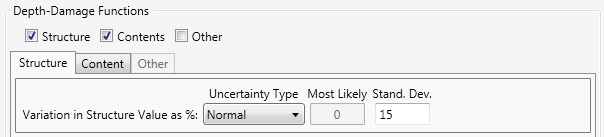
Plot Area
The plot area displays the current data in the style dictated by the selection in the Distribution Type. The x-axis is the depth in feet, while the y-axis is the damages as a percent. Any cell that contains an error is bordered in red. Hover over the cell to view the error message.
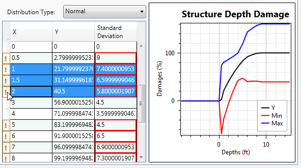
Editing the Data
The data is edited by clicking in a cell and typing the new value. Rows are selected by clicking to the left of the first cell (Figure 7.5). Select a single row with a single click, or select multiple rows by clicking and dragging.
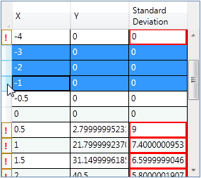